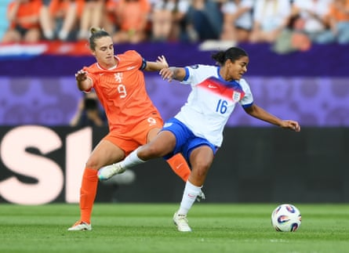
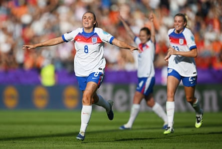

“Lovely,” said Sarina Wiegman, peering inquisitively at a television screen in the far corner of the room. The England head coach was responding to the news that Jess Fishlock had just scored Wales’s first goal at a major women’s international tournament, but given the mood in the press conference room, she could easily also have been referring to her own team’s performance after they steamrolled the Netherlands.
The tone and the atmosphere of the post-match exchanges was wholly contrasting to the scene in the same media room four days earlier, after the Lionesses had been second-best against France . This time, here was a proud Wiegman, a coach whose players had carried out her gameplan to perfection, and a coach who – while admitting she had felt “a little tension” before kick-off – clearly had always had conviction that her team would deliver under pressure . The back-to-back Euros winners made some big decisions for this pivotal match and they all paid off.
Moving Lauren James to the right wing
Wiegman’s sole change in personnel in her starting lineup was Ella Toone replacing Beth Mead and, in tandem with that switch, Lauren James moved out to the right wing where she had the freedom to show the world exactly how lethal she is. The Chelsea forward caused misery for the Dutch backline, especially their left-back Esmee Brugts, who had no reply to James’s immaculate close control, balance and strength.
James also found success cutting inside, exemplified by her powerful strike into the corner with her left foot for England’s opening goal, and occasionally she dropped deeper to collect the ball and dribble her way through a crowd of three Dutch midfielders, just because she can. Predominantly seeing her wide on the right, though, undeniably gave England a better balance, and in the No 10 role instead was a hard-working Toone, whose runs and off-the-ball tracking fully vindicated Wiegman’s selections.
Swapping Jess Carter and Alex Greenwood’s positions
The switch to centre-back for Jess Carter helped England neutralise the Netherlands forward line.Photograph: Harriet Lander/The FA/Getty Images
The other positional adjustment of note was Wiegman’s decision to switch Jess Carter to centre-back, where she most commonly plays for her club, and to move Alex Greenwood out to the left-back position, in a straight swap. Both players seem to look most at home in the centre of defence but Greenwood coped better, as a natural left-footer, than Carter had done against France, while equally Carter produced an outstanding performance on Wednesday, barely giving Vivianne Miedema a sniff of a chance.
Asked why she had made that change, Wiegman explained: “That had to do with a couple of things: the pace that the Netherlands have, and we expected that in the centre, where they wanted a lot of runs in behind. They also had pace now with Chasity Grant on our [left-hand] side, and with Alex, her left foot, on the left side, in possession we hoped we would distribute more going forward.”
Playing long balls over the top
Very noticeable about England’s tactics on Wednesday was how frequently they sought to get behind the Dutch defence by playing well-weighted balls over the top for Alessia Russo to run on to, and it worked to excellent effect. Russo’s tireless movement and intelligent runs into channels was combined with inch-perfect long-range passing, most impressively from the goalkeeper Hannah Hampton.
The Chelsea shot-stopper’s defence-splitting pass that led to England’s opening goal, in particular, has deservedly been praised, as she somehow picked out Russo’s run while placing her pass through the eye of a needle to avoid every Dutch player running between the two of them. The 24-year-old’s distribution is a weapon England can add to their attacking options and Wiegman’s decision to back her as her new No 1 paid off in this regard.
Keeping faith in Stanway
On a list of several England players who were underwhelming against France was Georgia Stanway, who by her own admission “couldn’t do the things that I wanted to be able to do in possession” in England’s opener, but the Bayern Munich midfielder spoke with passion and determination at the press conference, acknowledging that England had not been good enough and her rousing words encouraged England to “go back to their roots” of hard work.
On Wednesday, true to her own works, Stanway’s work rate was immense, as she played with the kind of high intensity, grit and skill that she had shown during England’s Euro 2022 triumph. Her goal, struck first-time into the bottom corner from range with real venom, epitomised the quality of her all-round performance and reminded everybody watching why she is such an integral part of the team.
Georgia Stanway repaid her manager’s faith with a fine performance and wonderful goal against the Dutch.Photograph: Matthias Hangst/Getty Images
Not panicking
Stanway’s press conference on Monday had also set the tone for England to bounce back, as they once again demonstrated their ability to problem-solve. After the loss to France, the Lionesses and Wiegman faced plenty of tough questions but, instead of ripping up the strategy book, dropping four or five players or triggering fallouts between personnel in the group, the Lionesses found a togetherness, and that largely comes from Wiegman’s calm approach.
Her response to wins is never too delirious and similarly her response to defeats is never too negative, and she backed her players to deliver. They, in turn, looked at themselves to address their form, rather than infighting. There is still a long way to go until the final in Basel, and England – who have alternated between wins and losses for the past seven matches – do need to work on their consistency, but they have found the blueprint now for how they can succeed in Switzerland.